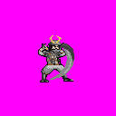

Home
Portfolio
Artwork
Videos
About Me
Contact
Resume
×
Videos
A collection of my animations and videos.
After Effects Walk Cycle
2.5D Scene
Orbiting Logo
Heinous Investigations Animation
Rethread Prototype
Walk Cycle Animation

Mun Jeong Full Sprites
Toshi Crouch Cycle